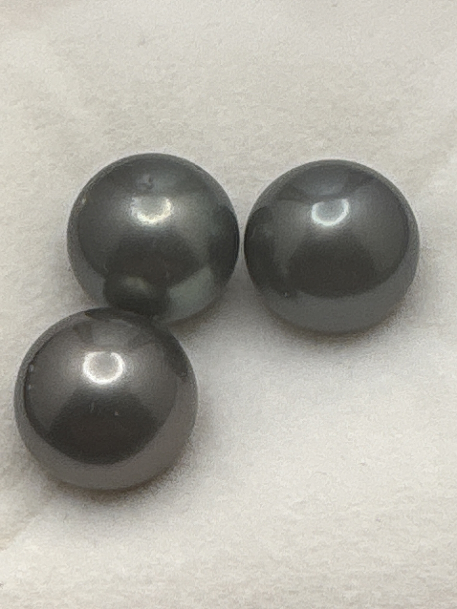

The Gem Drawer › No. 66

Three loose cultured pearls in dark gunmetal charcoal, 11 mm each.
| Catalogue no. | #66 |
|---|---|
| As labeled | Tahitian Black Pearls (cultured) - SET of 3 loose pearls, see notes |
| Shape / cut | Round (natural pearl form, not faceted/cut) |
| Weight | Not recorded |
| Measurements | 11mm (each, per label) |
| Colour | Dark gunmetal/charcoal gray |
| Clarity / condition | Not recorded |
Interested in this stone, or in the collection as a whole? Terry VanWormer can answer questions about it.
Click here to inquireor email Terry directly at maxrebo34@gmail.com